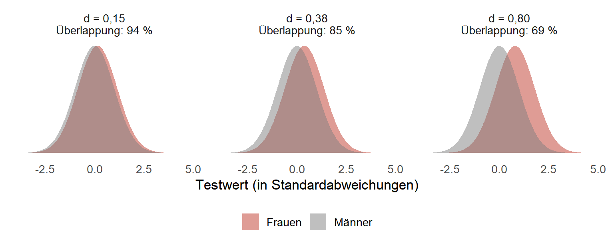
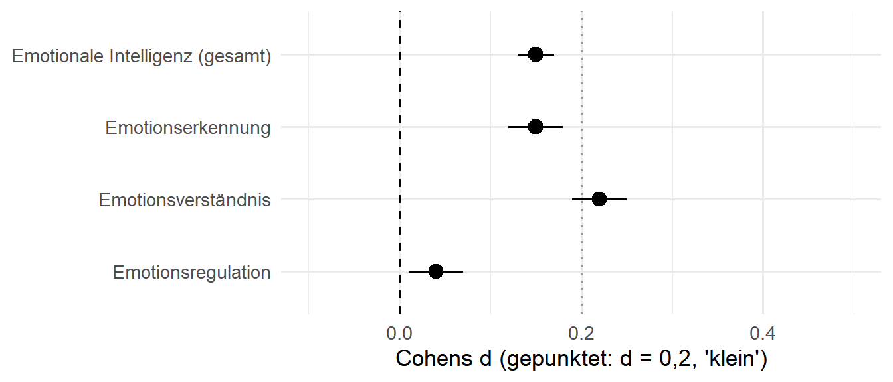
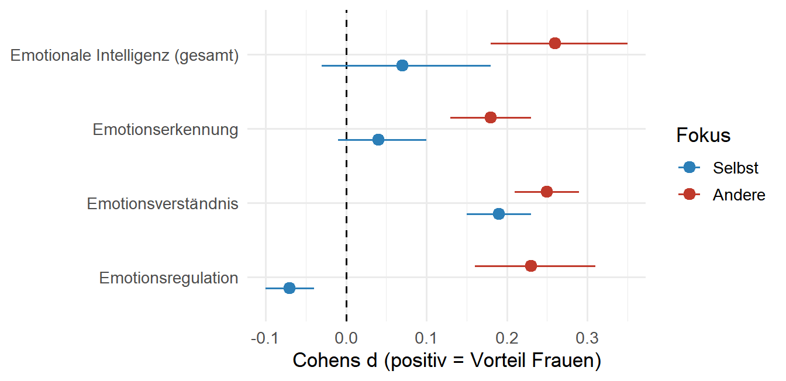
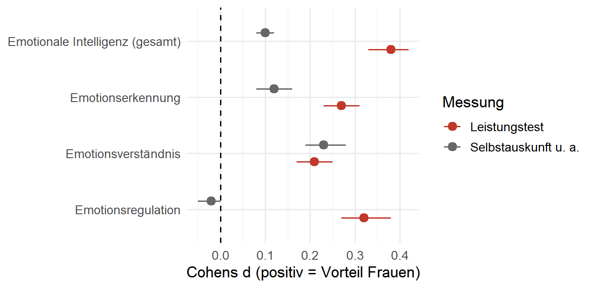
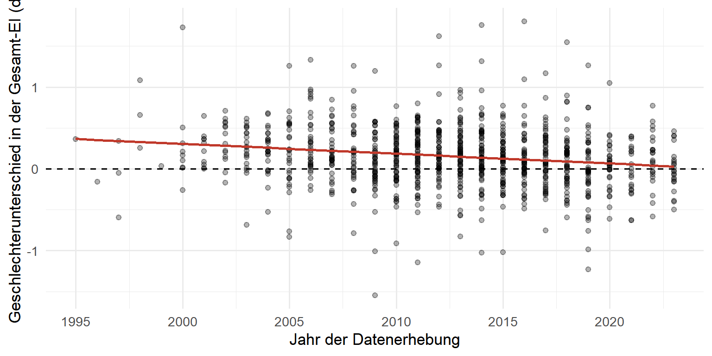

Shownotes
Gender Pain Gap
Aktuelle Forschung zeigt konsistente geschlechtsspezifische Unterschiede in der Schmerzwahrnehmung und -verarbeitung. Diese Unterschiede sind relevant für die Diagnostik und Therapie von Schmerzerkrankungen wie Cluster-Kopfschmerz, Knochenbrüche und Trigeminusneuralgie.
Schmerzwahrnehmung bei gleicher Ursache
Nocizeptive und entzündliche Schmerzen
Studien zeigen, dass Frauen bei nocizeptiven Schmerzen (z. B. Knochenbrüche, postoperativer Schmerz) und entzündlichen Schmerzen (z. B. rheumatoide Arthritis) durchschnittlich höhere Schmerzwerte angeben als Männer bei vergleichbaren Verletzungen oder Erkrankungen. Dies gilt auch für primäre Kopfschmerzerkrankungen wie Cluster-Kopfschmerz, bei dem Frauen häufiger betroffen sind und stärkere Schmerzintensitäten berichten.
Mögliche Erklärungen
- Biologische Faktoren: Östrogen und Progesteron beeinflussen die Schmerzwahrnehmung durch Modulation von Neurotransmittern wie Serotonin und Dopamin.
- Genetische Unterschiede: X-chromosomale Gene und geschlechtsspezifische Expression von Schmerzrezeptoren (z. B. TRPV1) könnten eine Rolle spielen.
- Psychosoziale Faktoren: Frauen neigen eher zu externalisierenden Coping-Strategien (z. B. sozialer Unterstützung), während Männer Schmerzen häufiger ignorieren oder “durchhalten”.
Neuropathische Schmerzen (z. B. Trigeminusneuralgie)
Die Evidenz zu Trigeminusneuralgie ist weniger eindeutig, aber einige Studien deuten darauf hin, dass:
- Frauen ein höheres Risiko für die Entwicklung einer Trigeminusneuralgie haben.
- Die Schmerzempfindlichkeit und -dauer bei Frauen stärker ausgeprägt sein können, möglicherweise aufgrund von Unterschieden in der Schmerzmodulation durch das zentrale Nervensystem (z. B. GABAerge und glutamaterge Systeme).
- Männer hingegen häufiger von chronischen neuropathischen Schmerzen nach Verletzungen berichten, möglicherweise aufgrund von Unterschieden in der Neuroplastizität und Entzündungsreaktion.
Systematische Reviews und Metaanalysen
Ein systematischer Review von Racine et al. (2012) zeigt, dass Frauen in 80% der Studien höhere Schmerzintensitäten und größere Schmerzempfindlichkeit aufwiesen als Männer. Allerdings wurden in vielen Studien methodische Limitationen identifiziert, z. B.:
- Unausgeglichene Stichproben (überwiegend Frauen in Schmerzforschung, aber Männer in neuropathischen Schmerzstudien).
- Fehlende Berücksichtigung von Hormonstatus (z. B. Menstruationszyklus, Menopause) in vielen Studien.
- Kulturelle Unterschiede in der Schmerzkommunikation, die die Selbstberichte beeinflussen können.
Geschlechtsspezifische Verzerrungen in der Schmerzbehandlung
Eine aktuelle Studie in PNAS (2024) zeigt systematische Verzerrungen in der Schmerzbehandlung von Frauen:
- Unterversorgung mit Schmerzmitteln: Frauen erhalten seltener Analgetika (insbesondere Opioide und Nicht-Opioide) als Männer, selbst bei gleichen Schmerzstufen und nach Kontrolle anderer Variablen.
- Unterschätzung der Schmerzintensität: Pflegekräfte und Ärzte bewerten die Schmerzintensität von Frauen geringer als die von Männern – obwohl die Schmerzscores objektiv gleich sind.
- Längere Verweildauer in der Notaufnahme: Frauen bleiben länger in der Notaufnahme als Männer, selbst bei ähnlichen medizinischen Befunden.
- Seltener dokumentierte Schmerzscores: Frauen haben eine niedrigere Wahrscheinlichkeit, dass ihre Schmerzscores von Pflegekräften dokumentiert werden.
- Geschlecht der Behandler: Der Effekt tritt unabhängig vom Geschlecht der Behandler auf – sowohl männliche als auch weibliche Ärzte und Pflegekräfte zeigen die Verzerrung.
- Mögliche Mechanismen: Die Verzerrung könnte auf stereotype Annahmen zurückgehen, dass Frauen Schmerzen übertreiben oder emotionaler reagieren als Männer. Studien zeigen, dass Laien und medizinisches Personal dazu neigen, die Schmerzintensität von Frauen zu unterschätzen.
Mechanismen: Hormone, Genetik und Psychologie
- Biologische Faktoren: Sexuelle Hormone (Östrogen, Testosteron) spielen eine zentrale Rolle in der Schmerzwahrnehmung und -verarbeitung. Östrogen kann sowohl schmerzverstärkend als auch schmerzlindernd wirken, abhängig von der Phase des Menstruationszyklus.
- Psychische Faktoren: Depressionen haben einen stärkeren Zusammenhang mit Schmerzen bei Frauen, während Angststörungen häufiger mit Schmerzen bei Männern korrelieren.
- Soziokulturelle Faktoren: Traditionelle Geschlechterrollen beeinflussen die Schmerzkommunikation (z. B. Maskulinität als stoisch, Feminität als expressiv). Frauen nutzen soziale Unterstützung oft als Coping-Strategie, während Männer Schmerzen eher ignorieren oder unterdrücken.
- Selbstidentität und Gender: Die eigene Geschlechtsidentität beeinflusst die Wahrnehmung und Kommunikation von Schmerzen. Nicht-binäre und transgender Personen sind in der Forschung bisher stark unterrepräsentiert.
Offene Fragen und Forschungsprioritäten
- Mechanismen: Wie wirken Hormone und Genetik auf die Schmerzwahrnehmung? Brauchen wir geschlechtsspezifische Schmerzmodelle?
- Klinische Studien: Warum sind Frauen in vielen Schmerzstudien unterrepräsentiert, obwohl sie häufiger betroffen sind?
- Geschlecht vs. Gender: Unterscheiden sich biologische Geschlechter (sex) von sozialen Rollen (gender) in der Schmerzwahrnehmung?
Literaturhinweise
Tip
[1] Racine, M., et al. (2012). Sex differences in pain: A systematic review and meta-analysis of observational studies. PAIN, 153(11), 2311–2320.
[2] Fillingim, R. B., et al. (2016). Sex differences in experimental pain sensitivity: A systematic review and meta-analysis. The Journal of Pain, 17(4), S1–S14.
[3] M. Guzikevits, T. Gordon-Hecker, D. Rekhtman, S. Salameh, S. Israel, M. Shayo, D. Gozal, A. Perry, A. Gileles-Hillel, & S. Choshen-Hillel, Sex bias in pain management decisions, Proc. Natl. Acad. Sci. U.S.A. 121 (33) e2401331121, https://doi.org/10.1073/pnas.2401331121 (2024).
[4] Keogh, E. (2025): Sex, gender, and pain: Evidence and knowledge gaps. Frontiers in Pain Research.
Gender und Emotionale Intelligenz
Note
Studie: Hausfeld, Hampel, Bach & Menges (2026). Putting assumptions to the test: A meta-analytic review of gender differences in emotional intelligence and specific emotion abilities. Emotion. https://doi.org/10.1037/emo0001733
Frage: Sind Frauen emotional intelligenter als Männer? Die Studie fasst dazu 1.279 Artikel mit 1.428 Stichproben und rund 609.000 Personen aus 76 Ländern zusammen.
Zentrale Konzepte
Emotionale Intelligenz (EI) ist die Fähigkeit, eigene und fremde Emotionen zu erkennen, zu verstehen und zu regulieren. Die Studie unterscheidet drei Teilfähigkeiten und zwei Blickrichtungen:
| Teilfähigkeit | Beispiel |
|---|---|
| Emotionserkennung | Erkenne ich an einem Gesicht, dass jemand traurig ist? |
| Emotionsverständnis | Weiß ich, wie Ärger entsteht und wohin er sich entwickeln kann? |
| Emotionsregulation | Kann ich Wut herunterregeln, oder eine gestresste Kollegin beruhigen? |
- Selbst- vs. Fremdfokus: Es geht um die eigenen Emotionen (selbstfokussiert) oder die anderer (fremdfokussiert).
- Messung: Leistungstests (man löst Aufgaben mit richtigen Antworten) vs. Selbstauskunft (man schätzt sich selbst ein). Das ist die wichtigste methodische Unterscheidung der Studie.
- Kontext: Die Autorinnen und Autoren prüfen, ob Unterschiede von Führungsrolle, Branche, Alter, Erhebungsjahr und Weltregion abhängen. Theoretischer Hintergrund ist die Social Role Theory: Geschlechterunterschiede entstehen auch durch unterschiedliche soziale Rollen und Erwartungen.
Was macht eine Metaanalyse?
Eine Metaanalyse fasst die Ergebnisse vieler Einzelstudien statistisch zusammen. Jede Studie liefert einen Effekt, hier den Mittelwertunterschied zwischen Frauen und Männern. Diese Effekte werden gemittelt, wobei größere Stichproben mehr Gewicht erhalten. Der Vorteil: Widersprüchliche Einzelbefunde (mal Frauen vorn, mal Männer, mal kein Unterschied) verdichten sich zu einem Gesamtbild. Zudem lässt sich prüfen, wovon der Effekt abhängt (Moderatoren), z. B. von der Art der Messung.
Zwei Kennwerte aus der Studie sollten Sie kennen:
- 95%-Konfidenzintervall (KI): Plausibler Bereich für den wahren Effekt. Schließt das KI die 0 ein, ist ein Unterschied nicht von Null unterscheidbar.
- Heterogenität (I²): Anteil der Streuung zwischen den Studien, der über Zufall hinausgeht. Hier liegt I² meist bei über 95 %. Die Einzelstudien unterscheiden sich also stark, und der Durchschnitt gilt nicht für jede Situation.
Wie interpretiert man Cohens d?
d ist der Mittelwertunterschied in Einheiten der Standardabweichung. Ein Wert von \[d = 0{,}15\] heißt: Der Durchschnitt der Frauen liegt 0,15 Standardabweichungen über dem der Männer. Positive Werte bedeuten hier einen Vorteil für Frauen, negative für Männer. Als grobe Richtwerte gelten \[d \approx 0{,}2\] klein, \[0{,}5\] mittel und \[0{,}8\] groß.
Auch ein “kleines” d bedeutet, dass sich die beiden Verteilungen fast vollständig überlappen. Bei \[d = 0{,}15\] hat bei einem zufälligen Paar aus einer Frau und einem Mann die Frau nur in etwa 54 % der Fälle den höheren Wert (Zufall wären 50 %). Von Gruppenunterschieden lässt sich nicht auf Einzelpersonen schließen.
Ergebnisse
Gesamtbild: Kleiner Vorteil für Frauen, je nach Fähigkeit unterschiedlich

Frauen schneiden insgesamt etwas besser ab (d = 0,15). Am größten ist der Unterschied beim Emotionsverständnis, bei der Emotionsregulation ist er praktisch null.
Entscheidend ist: Wessen Emotionen?

Die Autorinnen und Autoren sehen darin einen Hinweis auf eine mögliche “Doppelbelastung”: Frauen wird zugeschrieben, besser mit Emotionen umzugehen, obwohl sich dies bei den eigenen Emotionen kaum zeigt. Sie sollen aber zusätzlich die Emotionen anderer managen.
Entscheidend ist auch: Wie wird gemessen?

Bei der Regulation ist der Kontrast am größten: In Leistungstests liegt d bei 0,32, in Selbstauskünften praktisch bei 0. Beim Emotionsverständnis gibt es keinen Unterschied zwischen den Messarten. Selbstauskünfte hängen davon ab, wie sich Menschen selbst sehen, und das kann von Geschlechterstereotypen geprägt sein.
Kontexteffekte
Der Unterschied ist nicht überall gleich groß. Bei Führungskräften ist er größer (d = 0,25 in der Gesamt-EI) als bei Beschäftigten ohne Führungsrolle (d = 0,13). In männlich dominierten Branchen war er entgegen der Erwartung eher kleiner. Mit steigendem Alter nimmt er leicht zu (etwa +0,04 je 10 Jahre). In Nordamerika und Europa (d = 0,19) ist er größer als in anderen Regionen (d = 0,06).
Wird der Unterschied kleiner?
Je später die Daten erhoben wurden, desto kleiner ist der Vorteil der Frauen in der Gesamt-EI: Im Durchschnittsjahr 2013 liegt d bei 0,15, fünf Jahre später um 0,06 niedriger (95%-KI der Steigung: −0,08 bis −0,04). Gegen Ende des Beobachtungszeitraums nähert sich der Trend der Nulllinie.

Der Rückgang ist klein im Vergleich zur Streuung der Einzelstudien (jeder Punkt ist ein Effekt aus einer Stichprobe). Die Studie kann Erhebungsjahr, Alter und Generation nicht trennen. Ob sich Geschlechterrollen angleichen, bleibt daher eine Vermutung.
Limitationen
- Keine Kausalaussagen: Die Studie zeigt, wo Unterschiede bestehen, nicht warum. Sozialisation, biologische Faktoren und Selbstselektion (z. B. in Führungspositionen) lassen sich nicht trennen.
- Kleine Effekte, hohe Heterogenität: Die Effekte sind klein, die Streuung zwischen den Studien ist groß (I² meist über 95 %).
- Lücken bei der Messung: Für manche Fähigkeiten gibt es keine Leistungstests, z. B. nicht für selbstfokussierte Emotionserkennung. Messart und Fokus lassen sich daher nicht sauber trennen.
- Nur Gruppenvergleiche: Viele Studien berichten keine Mittelwerte getrennt nach Geschlecht. Es bleibt offen, ob Kontexteffekte auf Frauen, Männer oder beide zurückgehen.
- Zeit, Alter und Generation sind vermischt: Der Effekt des Erhebungsjahres lässt sich nicht von Alters- und Kohorteneffekten trennen.
- Nur nicht-klinische Stichproben: Die Ergebnisse gelten nicht ohne Weiteres für Personen mit Diagnosen.
- Binäres Geschlecht: Verglichen werden Frauen und Männer, andere Geschlechtsidentitäten kommen nicht vor.
- Verallgemeinerbarkeit: Leistungstests sind aufwendig und werden vermutlich in ressourcenärmeren Regionen seltener eingesetzt. Das kann regionale Vergleiche verzerren.
Tip
Hausfeld, M. M., Hampel, V., Bach, L. J., & Menges, J. I. (2026). Putting assumptions to the test: A meta-analytic review of gender differences in emotional intelligence and specific emotion abilities. Emotion. https://doi.org/10.1037/emo0001733
Alternative Differenzierungen von Familien
Die Folie zeigt, dass sich “Familie” nach ganz unterschiedlichen Merkmalen unterscheiden lässt. Jede Dimension führt zu einer eigenen Typologie.
Nach Größe und Struktur
| Begriff | Bedeutung |
|---|---|
| Kernfamilie | Eltern(teil) und die eigenen Kinder |
| Familie der Orientierung | Die Familie, in die man hineingeboren wird (Herkunftsfamilie) |
| Familie der Zeugung | Die Familie, die man selbst gründet (Eltern-Kind-Beziehung aus Sicht der Erwachsenen) |
| Gemeinschafts- bzw. erweiterte Familie | Mehrere Generationen und weitere Verwandte (z. B. Großeltern, Onkel, Tanten) bilden eine Einheit |
Nach Heiratspraktiken
| Begriff | Bedeutung |
|---|---|
| Monogame Familie | Zu einem Zeitpunkt besteht nur eine Ehe bzw. Partnerschaft |
| Polygame Familie | Mehrere Ehepartner gleichzeitig |
| Polyandrische Familie | Eine Frau mit mehreren Männern |
| Polygyne Familie | Ein Mann mit mehreren Frauen |
| Endogame Familie | Es wird innerhalb einer Gruppe geheiratet (z. B. Religion, Schicht, Clan). Das Endogamie-Prinzip ist die entsprechende Regel |
| Exogame Familie | Es wird außerhalb der eigenen Gruppe geheiratet (z. B. durch Inzestverbote). Das Exogamie-Prinzip ist die entsprechende Regel |
Nach Autorität
- Patriarchal: Entscheidungsmacht liegt bei den Männern (meist beim Vater).
- Matriarchal: Entscheidungsmacht liegt bei den Frauen (meist bei der Mutter).
- Egalitär: Entscheidungsmacht ist zwischen den Partnern geteilt.
Nach Wohnsitz
| Begriff | Das Paar lebt nach der Heirat … |
|---|---|
| Patrilokal | bei bzw. in der Nähe der Familie des Mannes |
| Matrilokal | bei bzw. in der Nähe der Familie der Frau |
| Bilokal | wahlweise bei der einen oder der anderen Familie |
| Neolokal | an einem neuen, eigenen Wohnort |
| Avunkulokal | beim Onkel mütterlicherseits (dem Bruder der Mutter) |
Nach Abstammung
- Unilinear: Die Verwandtschaft wird nur über eine Linie gezählt.
- Patrilinear: über die Vaterlinie.
- Matrilinear: über die Mutterlinie.
- Bilinear: Beide Linien zählen, oft mit unterschiedlichen Rechten, z. B. beim Erbe oder bei der Gruppenzugehörigkeit.
Note
Die Typologien sind nicht trennscharf und schließen sich nicht aus. Dieselbe Familie kann z. B. eine Kernfamilie, monogam, egalitär und neolokal sein. Welche Dimension sinnvoll ist, hängt von der Forschungsfrage ab.